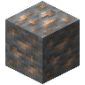
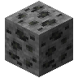
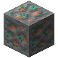
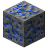
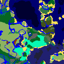
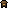
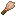

便利な機能
このページについて
インベントリや画面まわりでバニラより便利になっているところと、金床・ダッシュ・死んだときの持ち物・ドロップの保証のように、遊びやすく変えたところをまとめました。キーはどれも初期設定のもので、設定の「操作設定」の「PoyoSecretBase」の欄で変えられます。
携帯作業台
インベントリのどこかに  作業台 を持っていれば、Alt（Mac は Option） を押しながら E を押すと、その場で作業台の 3×3 の画面が開きます。作業台は減りません。
作業台 を持っていれば、Alt（Mac は Option） を押しながら E を押すと、その場で作業台の 3×3 の画面が開きます。作業台は減りません。
- 作業台は防具の枠やオフハンドに入れていても使えます。
- E、Alt（Mac は Option） ＋ E、Esc のどれかで閉じると、格子に残ったものはインベントリに戻ります。
- 作業台を持っていないときは、いつもどおりインベントリが開きます。
- 置いた作業台は、これまでどおり使えます。
整列ボタン
インベントリとチェストなどの画面に、小さな整列ボタンが付きます。押すと、同じアイテムをまとめてから、アイテムの種類順・名前順・数の多い順に並べ替え、空いた枠を最後に寄せます。
- チェスト・ラージチェスト・樽・エンダーチェスト・シュルカーボックス・ディスペンサー・ドロッパー・ホッパー・木箱・かごの画面には、ボタンが 2 つ付きます。上はチェストなどの中身、下は自分のインベントリを並べ替えます。
- ホットバー・防具・オフハンドは動かしません。
- 作業台やかまどのように結果の枠がある画面と、クリエイティブのインベントリにはボタンがありません。
- 並ぶ順番はアイテムの内部の番号順なので、入れている MOD によって変わります。
- バンドルは、空いた枠を通してしか動かしません。空きが無いときは、まとめるだけで並べ替えません。
ゴミ箱
ホットバーが見える画面（インベントリ、チェスト、かまど、村人との取引など）の右端に、ホットバーと同じ高さでゴミ箱が付きます。クリエイティブのインベントリは、もともとのゴミ箱の枠を使います。
- アイテムを持ってゴミ箱をクリックすると消えます。左クリックでも右クリックでも同じです。
- 手を空にしてもう一度クリックすると、最後に捨てたものを取り戻せます。取り戻せるのは最後の 1 つだけで、次のものを捨てるか画面を閉じると、本当に消えます。
- 手が空のときに枠にカーソルを載せて Delete を押しても、その枠のものをゴミ箱に送れます。結果の枠と、金床の名前欄のような文字の入力欄では効きません。
- PoyoSecretBase の入っていないサーバーでは、ゴミ箱は出ません。
レシピの出力選択
作業台・インベントリの 2×2・携帯作業台・かまど・溶鉱炉・燻製器・鍛冶台・クラフターで、置いた材料が結果の違うレシピにいくつも合うとき、結果の枠の上に小さなボタンが出ます。
- ボタンを押すと、作れるものがパネルの上に横一列で並びます。緑の枠が今作るものです。別のものをクリックすると、それを作るようになります。
- 1 列に入りきらないときは、列の両端の矢印でページをめくります。
- 並び順はアイテムの内部の名前順です。選ぶまでは先頭のものを作るので、バニラで作られるものと違うことがあります（たとえば
 石 1 個は、選ぶまで
石 1 個は、選ぶまで  丸石 になります）。
丸石 になります）。 - 選んだものは、材料がそのレシピに合っている間ずっと続きます。
- 作業台・2×2・携帯作業台・鍛冶台で選んだものは自分だけのもので、ログアウト・死亡・エンドからの帰還まで続きます。かまど・溶鉱炉・燻製器・クラフターで選んだものはブロックに残り、ワールドと一緒に保存されます。
- かまどで焼いている途中に選び直すと、新しいレシピを最初から焼きます。
- JEI でレシピを移しても、選んだことにはなりません。
- PoyoSecretBase の入っていないサーバーでは、ボタンは出ません。
防具の表示切り替え
インベントリ（クリエイティブのインベントリのタブも）の防具の 4 つの枠の右上に、小さなチェックボックスが付きます。チェックを外すと、その枠の防具が見た目から消えます。自分にも、ほかのプレイヤーにも、三人称の視点でも、インベントリの人形でも消えます。
- 変わるのは見た目だけです。防御力・エンチャント・エリトラの飛行・ピグリンが金を見ること・くり抜かれたカボチャの視界は、そのまま残ります。
- 胸を隠すとエリトラの翼も消え、胸当てやエリトラに隠れていたマントが見えます。頭を隠すと、頭に付けた頭やカボチャ、ブロックも消えます。
- チェックを切り替えるのは左クリックだけです。ほかのクリックは、いつもどおり下の枠に効きます。
- チェックの状態はプレイヤーごとにワールドに保存されるので、ログアウト・死亡・ディメンションの移動のあとも続きます。オフハンドにはチェックボックスがありません。
- PoyoSecretBase の入っていないサーバーでは、チェックボックスは出ず、何も隠れません。
HUD
画面の左上に少し小さな文字で、今いる座標・向いている方角・立っている場所のバイオームを 1 行ずつ表示します。少し空けて時刻、さらに少し空けて MineAll と CutAll がオンかオフかを表示します。その下にそれぞれ少し空けて、Armor: の行に着ている防具が頭から順に耐久値のバー付きで、Ore: の行に足もとの高さとバイオームで生成される鉱石が並びます。




- 最初から表示されていて、
/trigger hudで消したりもう一度出したりできます。オペレーター権限は要りません。設定はプレイヤーごとにワールドに保存されます。 - 方角は S・W・N・E のどれかです。バイオームは F3 のデバッグ画面と同じく足もとのものを、ゲームの言語で表示します。言語ファイルに名前の無いバイオームは ID で表示します。時刻は 24 時間制で、1 日は 06:00 に始まります。どのディメンションにいても、オーバーワールドの時刻を表示します。
- インベントリやメニュー、チャットを開いている間と、F3 のデバッグ画面を出している間は消えます。
- 空いている防具の枠は詰めて並びます。見た目を隠した防具も表示します。
- 鉱石は、全部の高さを通して多く出るものから順に、その高さの岩の鉱石ブロック（Y 0 より下は深層岩のもの）で表示します。下のバーは、そのバイオームでその鉱石が一番多く出る高さを満タンの緑とした出やすさで、出にくい高さほど短く赤くなります。
- 鉱石はバイオームの生成設定から読むので、データパックや別の MOD が足した鉱石も出ます。土・砂利・花崗岩などの塊は出ません。
- 座標・方角・時刻の読み方とコマンドは Vanilla Tweaks のデータパック「Coordinates HUD」にならっています。両方を入れると両方の表示が出るので、どちらか一方にしてください。
シードマップ
J を押すと、今いるディメンションの地図が開きます。ワールドのシードから計算した地図で、バイオームを色分けし、/locate structure で探せる構造物を、行ったことがあってもなくてもアイコンで表示します。



この図の構造物
- 村
- 海底神殿
- 魔女の小屋
- トライアルチャンバー
- 遺跡
- 放棄されたキャンプ
この図のバイオーム
- 砂浜
- シラカバの森
- 冷たい海
- まだらな森
- 暗い森
- 冷たい深海
- 深海
- 花の森
- 森林
- ぬるい海
- 海洋
- シラカバの原生林
- マツの原生林
- トウヒの原生林
- 平原
- 河川
- ヒマワリ平原
- 沼地
- タイガ
- 吹きさらしの森
- 吹きさらしの砂利の丘
- 吹きさらしの丘
- 吹きさらしのサバンナ
- ドラッグで動かし、ホイールでカーソルの位置を中心に拡大・縮小します（+ と - は画面の中心で拡大・縮小）。
- 右の凡例で、構造物の種類ごとに表示を切り替えます。最初はすべてオフで、「すべて表示」でまとめて出せます。「バイオーム」のタブでは、バイオームを強調できます。
- オーバーワールドでは「地表」「地下」「最下層」で、バイオームを読む高さを選べます。繁茂した洞窟・鍾乳洞・ディープダークのような地下のバイオームが見えます。
- グリッドはチャンクと領域の境目を描きます。X と Z を入れて移動すると、その座標へ動きます。「現在地」で自分の位置に戻ります。
- アイコンにカーソルを載せると名前・座標・距離が出て、クリックするとその座標がチャット欄に入ります（送信はしません）。アイコンは
/locate structureが答える位置、つまり構造物のあるチャンクの角に立ちます。 - 左上のボタンで、オーバーワールド・ネザー・エンドを切り替えられます。ネザーポータルと同じく、オーバーワールドとネザーの間は 8 倍の距離で対応します。
- シングルプレイでは、地図を開いている間はゲームが止まります。J か Esc で閉じます。
- 地図はサーバーが少しずつ計算します。チャンクを読み込んだり生成したりはしません。PoyoSecretBase の入っていないサーバーでは開けません。
気をつけること
- シードマップは、だれでも、行ったことのない場所の構造物まで見られます。ワールドのシードを知っているのと同じです。
- 地図は、今のワールド生成で作られるはずのものを表示します。古いバージョンで生成したチャンクや、ワールド生成を変える MOD・データパックがあると、実際と違うことがあります。
金床
金床は壊れなくなりました。何度使っても、どの高さから落としても、金床・欠けた金床・壊れかけの金床はそのままで、壊れかけの金床もなくなりません。すでに欠けた金床が直ることもありません。
- 修理・合成・名前の変更に経験値のレベルを使いません。レベル 0 でも結果を取れ、画面にもコストが出ません。
- 「高すぎる！」が出なくなったので、何度手を入れた道具でもまた手を入れられます。2 個以上重ねたものにエンチャントできないのは、バニラと同じです。
- アイテムには修理のコストがバニラと同じく記録されるので、MOD を外すとバニラの値段に戻ります。
- 砥石・エンチャントテーブル・鍛冶台は変わりません。切り替える設定はありません。
ダッシュ
おなかが減っていてもダッシュできます。満腹度がいくつでも、空っぽでも走り始められ、走り続けられます。バニラでは満腹度（肉のアイコン）が 3 個以下だと走れません。
- 地面を走っても、歩くときと同じく満腹度は減りません。
- ダッシュしながらのジャンプは、歩きながらのジャンプと同じ 0.05 だけ消耗します（バニラでは 0.2）。
- それ以外はバニラと同じです。歩きながらのジャンプ・泳ぎ・ブロックを壊す・攻撃する・ダメージを受けると満腹度は減り、体力は肉のアイコンが 9 個以上のときだけ回復し、空っぽになると飢えます。食べることは必要です。
- 盲目・スニーク・アイテムの使用・浅い水でダッシュが止まるのも、これまでどおりです。切り替える設定はありません。
死んでも持ち物を残す
死んでも、インベントリ・防具・オフハンドの持ち物と経験値は失われません。ゲームルール keep_inventory をオンにした状態と同じで、どこで死んでも、何に倒されても変わりません。
- 死んだ場所にアイテムは落ちず、倒した相手に経験値のオーブも出ません。
- 消滅の呪いが付いたアイテムも消えません。
- ゲームルール
keep_inventoryは効かなくなりました。/gamerule keep_inventoryで調べると、どう設定していても true と出ます。切り替える設定はありません。
ドロップの保証
Mob の装備品と、爆発で壊れたブロックは、毎回落ちるようになりました。皮・糸・羽を落とす Mob は、必ず 1 個以上落とします。それ以外のドロップは、確率やドロップ増加も含めて、バニラと元の MOD のとおりです。
装備品 — プレイヤーが倒した Mob は、持っている武器と着ている防具を毎回落とします。耐久値が減っていることがあるのはバニラと同じです。ヴェックスの剣や試練の間のスポナーから出た Mob の装備のように、もともと落とさない物は落としません。プレイヤー以外に倒されたときも、バニラと同じく落としません。
爆発 — クリーパー・TNT・ネザーのベッド・ウィザーなど、どの爆発で壊れたブロックも、素手で壊したのと同じだけ落とします。地面に落ちているアイテムも爆発では消えません。溶岩・火・奈落では今までどおり消えます。ゲームルールの block_explosion_drop_decay・mob_explosion_drop_decay・tnt_explosion_drop_decay は効かなくなりました。
皮・糸・羽 —  革・
革・ 糸・羽根 を落とす Mob は、バニラより 1 個多く落とすので、1 個も落とさないことはなくなりました。ドロップ増加はバニラと同じだけ効きます。ナイフで倒すと、さらに 2 個多く落とします（Farmer's Delight のナイフは 1 個でした）。
糸・羽根 を落とす Mob は、バニラより 1 個多く落とすので、1 個も落とさないことはなくなりました。ドロップ増加はバニラと同じだけ効きます。ナイフで倒すと、さらに 2 個多く落とします（Farmer's Delight のナイフは 1 個でした）。
- ウシ・ムーシュルーム・ウマ・ロバ・ラバ・ラマ・行商人のラマ：皮 1〜3 個、ナイフなら 3〜5 個
- ブタ・ヒツジ：皮 1〜3 個、ナイフなら 3〜5 個（バニラでは皮を落としません）
- ホグリン：皮 1〜2 個（ナイフでも変わりません）
- クモ・洞窟グモ：糸 1〜3 個、ナイフなら 3〜5 個
- ストライダー：糸 3〜6 個（ナイフでも変わりません）
- ニワトリ：羽 1〜3 個、ナイフなら 3〜5 個
- オウム：羽 2〜3 個（ナイフでも変わりません）
- ネコの糸は、バニラと同じ 0〜2 個です。
生きたまま落とす羽 — ニワトリは卵を産むたびに、羽を 1 枚いっしょに落とします。オウムは野生でも飼いならしていても、5〜10 分ごとに羽を 1 枚落とします。プレイヤーの肩に乗っている間は落としません。
それ以外のドロップ — 野生の作物はときどき作物を、葉はときどき苗木を落とし、ナイフで倒したブタは半分ほどの確率でハムを落とします。ゾンビやピリジャーなどは、まれにタマネギを落とします。イカは  生のイカ、ヒカリイカは
生のイカ、ヒカリイカは  生のヒカリイカ を 1 個落とし、ドロップ増加のレベルごとに 1 個増えます。
生のヒカリイカ を 1 個落とし、ドロップ増加のレベルごとに 1 個増えます。